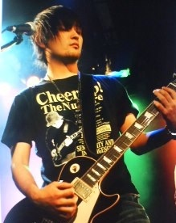
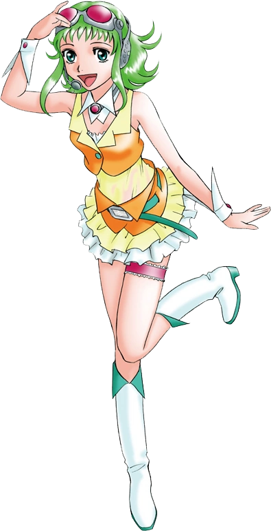
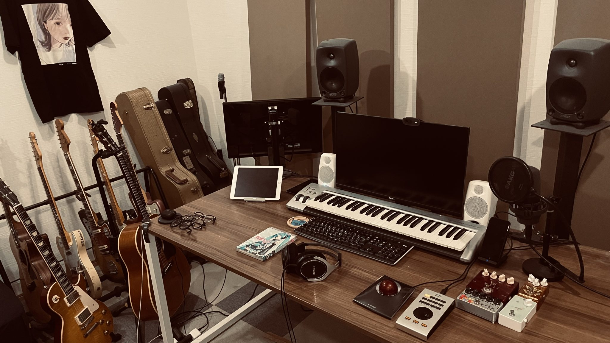
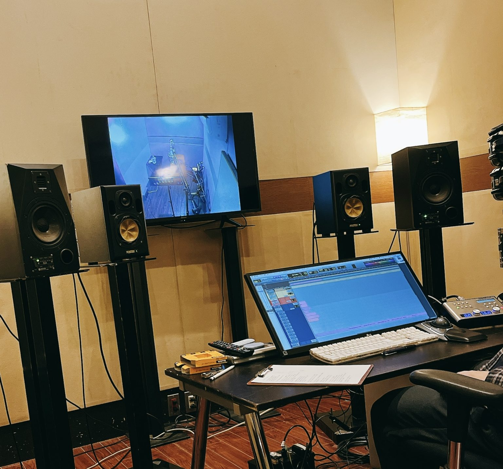

Vocalo Producers with VOCALOID: Interview with buzzG
Reentering the world of music through VOCALOID
VOCALOID, which uses synthetic singing voice technology developed by Yamaha, has continued to advance since it was first released in 2003. The latest version is VOCALOID6, which features VOCALOID:AI. Other companies also sell voicebanks for VOCALOID. A genre has been established for music sung by virtual singers created using singing voice synthesis technologies. Called “Vocalo” in Japanese, numerous tracks of this now beloved genre are uploaded every day. “Vocalo Producers with VOCALOID” is a series of special interviews that delves into how the producers who sustain Vocalo culture first encountered the VOCALOID singing voice synthesis technology developed by Yamaha and what their relationships with it are now.
This time, we spoke with buzzG who has roots in classic J-pop and releases Vocalo songs with a rock band sound.
Profile of buzzG
Musician.
His music is distinguished by a sharp guitar sound that contrasts with beautiful melodies and sensitive deep worldly lyrics. Some of his representative VOCALOID songs are “Shiwa,” “Albino,” “Kakurenbo” and “World Lampshade.” While releasing VOCALOID songs, he is also receiving high praise for writing songs for various artists.
Introduced to VOCALOID by “Melt”
Y: Thank you for speaking with us today. Please start by telling us about your first encounter with VOCALOID.
B: It was around 2007. I was already involved in music before becoming a VOCALOID producer. I was in a band. The beginning was when my friend who was the drummer in the band pointed out “Melt,” which of just been released by Ryo from supercell and had me listen to it. I did not even know about Niconico then.
Video: “Melt” by ryo is one of the most influential Vocaloid songs of all time.
Y: What was you impression when you first heard a Vocalo song?
B: Of course, I thought the song was good and I had a technical interest, but I was totally wrapped up in my own music activities and other things going on around me at the time, so I just filed it away somewhere in my brain as “something interesting.”
Y: So, around when did you get into the VOCALOID world?
B: There was a period after first hearing it that I did not listen to it at all. Probably about two years after I heard Melt, I quit playing with a band, so I had more time and started watching Niconico. Around when I started listening to Vocalo tracks in recommended videos, my drummer friend bought Hatsune Miku and had me listen to a Vocalo song they made. That is when I thought, “This is nice.”
I think that, especially because I had a cooling down period after stopping making music, I was able to accept Vocalo songs more neutrally than when I first heard them. Since I was completely exhausted from communicating with people while making music, learning that there was a world with VOCALOID where individuals could complete music with vocals by themselves and that the diverse culture would accept any type of song was big.
That was the inspiration. Because my friend was using Hatsune Miku, I thought I should use a different voicebank, so I bought GUMI and started making music on a computer at the same time I started using VOCALOID.
Y: Learning to make music on the computer and use VOCALOID at the same time must have been pretty difficult.
B: Since it felt like I had found something that I could throw myself into, it was like giving a kid a video game. I do not remember it being especially difficult, and before I knew it, I was able to do it. I have always liked new things and gadgets, so I think that is why I quickly became absorbed in it.

Image: buzzG when he was in a band
GUMI: the voicebank that changed my life
Y: Tell us a memory you have from when you first started making music with VOCALOID.
B: There were times when I thought she would not articulate clearly and was harder to control than I expected, but these failures and struggles were also part of why it was interesting, and I became absorbed in it. I think it was like a kid getting a new toy and also like being a parent watching a daughter.
Y: What was the hardest to control?
B: I could not get her to pronounce consonants well and I went through a lot of trial and error trying to figure out what to do. At the time, there was not a lot of information, so it was difficult.
For about the first four songs, I had GUMI singing the words after just typing them in. By the way, when I start using other voicebanks, it does not go well at all. I have tried using various voicebanks, wondering what I can do to make it go well, and it seems like I have started to find my own techniques.

Image: GUMI's official V2 box art
Y: So, at first, instead of Hatsune Miku, it was GUMI.
B: My friend had Hatsune Miku, so my feeling was that I should buy something with a different color (laughs).
Y: Did you discover anything when you changed to Miku?
B: I thought GUMI was more natural. On the other hand, when I started using Miku, I think I became able to imagine something like this kind of song for Miku and this kind of song for GUMI. Recently, I have been using RIN and others a lot. I change the voicebank according to the song.
Y: Which do you do more often, select the voicebank after writing the song or create the song according to the voicebank?
B: Definitely selecting after creating the song is much more frequent. Adjusting the song to suit the voice character is rare. It might be similar to the feeling of selecting a vocalist to suit a song after it is written.
I do not have any preferences among voicebanks. I use RIN when a crisp feeling would be good and GUMI when I want it sung with a somewhat heartbroken feeling. Since Miku is flat, she can also sing ballads but does not seem quite right when it gets very emotional, so then I use GUMI.
Y: If you had to choose a favorite voicebank, who is it? Please also tell us why.
B: In the sense that I have the strongest attachment, it would be GUMI. I use it less often recently, but it is the voicebank that drove my life crazy in a good sense.
Video: buzzG's oldest posting to YouTube is the GUMI song “Shiwa” in 2014
A reason for recommending it is that since this singing voice has a rawness and a feeling of impatience, it is really good for emotional things. Since I originally did heavy rock and emotional genres, I started with Vocalo as an extension of that path, so I think it was really great as my first choice.
If Miku have been the first one that I had gotten to know, I might have become an entirely different kind of Vocalo producer. The order that you get to know them is important.
Loving VOCALOID and the connected community
Y: Please tell us about something that has inspired you most since becoming involved with VOCALOID.
B: Meeting with new people in the same category called VOCALOID. For example, I think that if you are in a rock band, you do not often meet people who are making reggae. In the category of VOCALOID, however, there are opportunities to meet people from entirely different genres as well as to talk with illustrators and video creators. Being able to talk with people in different fields and create works together is a really great thing. I am moved by the fact that VOCALOID becomes like a glue, and I think that was something I needed personally at the time that I started VOCALOID.
Y: Since you began working with VOCALOID, how has it affected your musical activities?
B: Probably that it had a large personal impact because I got to know various other people and that became like a mirror to know myself. I think I liked the community that is connected just by everyone in it “liking VOCALOID.” Of course, I also love Hatsune Miku as a character. More than that, though, Hatsune Miku is also a core, and I think I like that context from which a land has developed. It is an independent country.
I was able to naturally know who I could trust and rely on in the community, and numerous opportunities and encounters occurred, so I feel that this society-like thing was changing me.
Y: Do you mean that communication triggered by VOCALOID changed you?
B: For example, isn’t there this idea that geniuses and works of art are cultivated alone, removed from communication and the understanding of others? There was a time when I admired that style, but I figured out that I probably was not a genius who benefited from the boons of solitude. People allow me to live, but sometimes I also find them difficult and dislikable, and I also love solitude at certain times. I think the biggest thing is the change that I have become able to accept and expose various aspects of myself, which can be indecisive and neither black nor white.
Because of this change, I think the mindset that I was not good at creating music with other people, which requires deep communication with them like in a band, has begun to disappear.
VOCALOID as a kind of alter ego
Y: Please tell us if there are any differences or things you focus on when creating songs for people and when creating them for VOCALOID.
B: I am not really the versatile type, so I am not clearly conscious of any, but when I listen to finished songs, sometimes I sense that I might be treating them differently unconsciously. I like to add live-feeling strings* when a human singer is singing but I think synths** are better with VOCALOID, for example. Also, the key range*** of VOCALOID is much broader.
*Sounds of stringed instrument sections with, for example, violins
**Electronic sounds made with synthesizers
***Range from the lowest to the highest note in a vocal melody
Y: Have you ever thought about having people sing songs you put out with VOCALOID?
B: It is being done with independent productions and covers. Maybe Vocalo songs are close to the feeling like I am singing myself. People tell me that my Vocalo songs “sound like buzzG-san is singing them.” It seems like the peculiarities of my singing style are reflected in them as is. It is as though VOCALOID exists like a living copy of myself. I feel that the lyrics are also not something that I want Miku to sing, but rather lyrics that I want to sing.

Image: buzzG’s production environment
Y: So, it is also significant as your alter ego. Why don’t you use male VOCALOID voices?
B: Why… I wonder? Being asked that now, I realize I have never deeply thought about why I do not use them. I might in the future. The chance is not zero.
Y: We have more to look forward to. Have you ever thought that you wanted to try singing together with a VOCALOID?
B: Actually, there are several songs where I am in there at a low level. I am singing a little an octave down. But there are no songs where I am taking a lead part. I think it might be interesting, but I am also not that confident in my own singing.
But, I wonder, might Vocalo native listeners actually accept things like that quickly? Even more so in PROJECT SEKAI, aren’t people and VOCALOIDs singing together? For these reasons, I am thinking that people and VOCALOIDs coexisting would be accepted without any resistance. I am really interested in how things will change when Vocalo native listeners become the generation at the center of music production.

Image: Sometimes he also records at other studios
Y: Finally, please give some advice to people who want to become Vocalo producers or try creating songs using VOCALOID.
B: Having been doing this for 13 years, I think that keeping going for a long time is a lot harder and more impressive thing to do than having a single hit song. I think it is easy to use numbers, reputation and things that are influenced by other people as motivation. Rather than that, however, I think having your own absolute personal direction that is not swayed by others is probably more important for continuing strongly over a long time. I think Vocolo culture, in which pros and amateurs all coexist without difference, is a really great world. So, I think that having your own identity and having fun and being involved is important.
Y: Listening to your thoughts, I felt again the generosity of the Vocalo community, and I am now looking forward to hearing your future songs. Thank you very much for your time today.
Vocaloid
+Vocaloid is a singing voice synthesizer software product developed by Yamaha Coporation and released in 2004. Each Vocaloid voice bank is represented by an avatar, also referred to as a Vocaloid.
“Melt”
+A song by ryo featuring Hatsune Miku, published in December 2007. It is one of the most popular Vocaloid songs of all time and arguably the most influential, due to its role in popularizing Vocaloid as a legitimate tool for music production.
Hatsune Miku
+The most popular Vocaloid character. She is marketed as a 16-year-old virtual idol and is often known for her iconic long blue twintails. She is also known by her code-name "CV01."
GUMI
+A green-haired Vocaloid character representing the Vocaloid Megpoid. The two are often conflated as "Megpoid GUMI." GUMI is also popular for her English voicebank.